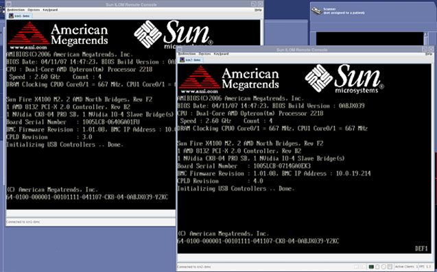
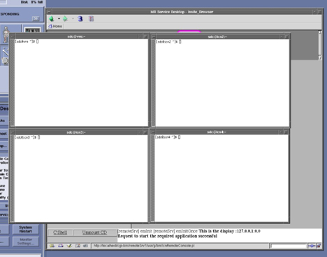

The window shown below displays for the silver SUN ICN during boot-up. Login information for this ICN is the same as the Host computer: VRE login is sdc with the password adw2.0.
Illustration 3: Output Display for Silver SUN ICNs

The window shown below displays for systems that contain four black dedicated computing ICNs (one per ICN).
Illustration 4: Output Display for Black Dedicated Computing ICNs
